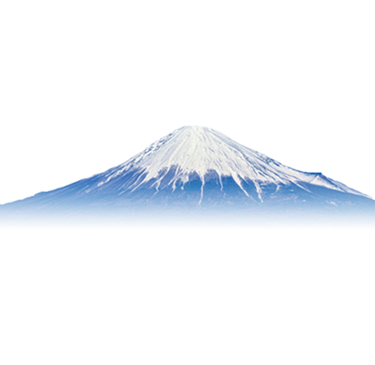
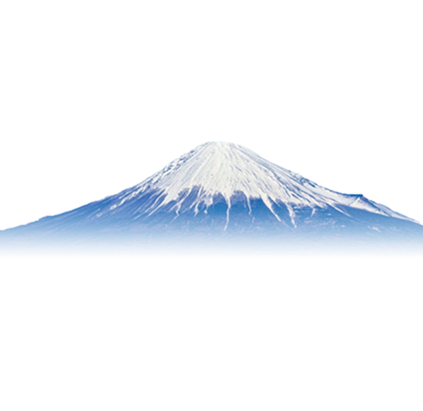
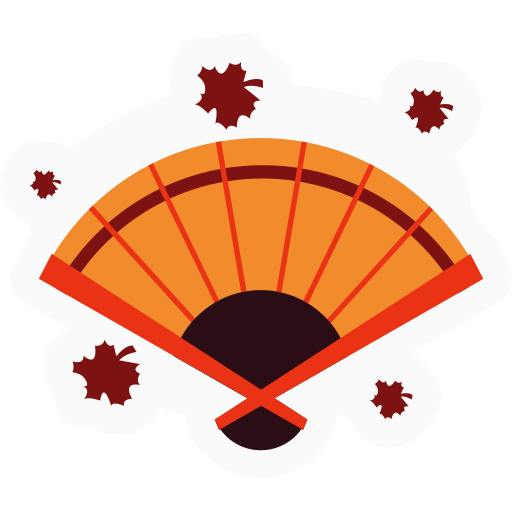
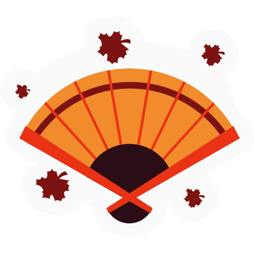

 

“백조 도래지”로서 나라의 천연 기념물로 지정된 “효코호”. 백조는 매년 10월 상순에서 3월 하순까지 머뭅니다. 11월 하순경 피크 시에는 5,000마리〜6,000마리 백조들이 날아듭니다. 종류는 고니, 큰고니, 혹고니입니다. “효코호 물새의 먹이”를 구입해서 백조들에게 먹이를 주어 길들일 수 있습니다.
일본해(동해)에 돌출해 솟은 바위 “오노카메”의 해발은 167ｍ, 거북 모양으로 된 커다란 너럭바위입니다. 미슐랭 관광판 “ 미슐랭 그린 가이드 재폰”에서 2스타를 획득했습니다. 오노카메에서는 일본 최대 규모의 원추리 군락이 있습니다. 꽃들이 가장 아름답게 피는 시기는 5월 하순〜6월 상순. 눈앞에 펼쳐진 노란 융단을 깔아놓은 듯한 풍경은 압권입니다.
맑고 푸른 바다와 백사장이 조화를 이룬 매력적인 명소입니다. 사사가와 나가레는 무라카미 시내 11km 구간에 이어져있는 해안입니다. 일본해(동해)의 거센 파도의 침식 작용으로 형성된 기암, 암초, 동굴 등 변화무쌍한 풍경이 펼쳐진 사사가와 나가레의 웅장한 경관은 국가 명승 및 천연 기념물로 지정되었습니다.